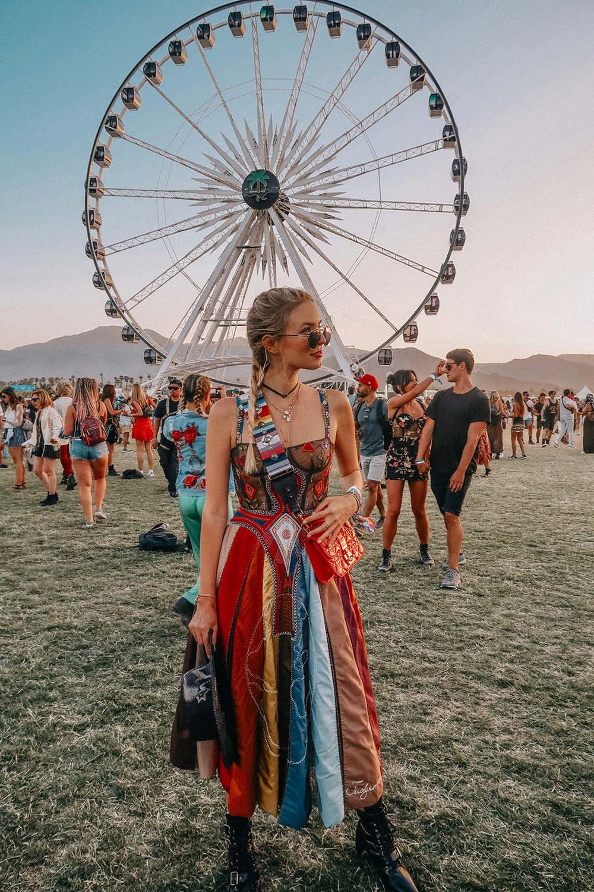
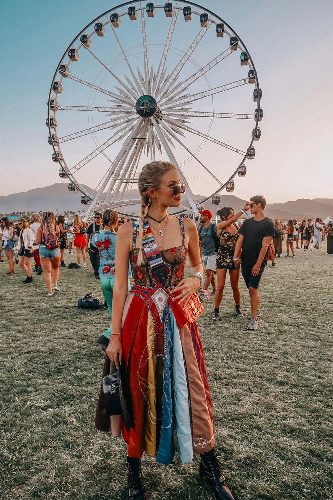

1.Đẹp Theo Trang Phục Truyền Thống
Chắc hẳn khi nhắc đến trang phục truyền thống, điều đầu tiên mà mỗi người dân Việt Nam nghĩ đến chính là Áo dài. Áo dài là trang phục truyền thống đồng thời cũng là quốc phục của nước ta mỗi khi giới thiệu với bạn bè quốc tế. Trước đây, Áo dài được cả nam và nữ mặc vào hầu hết mọi thời điểm trong ngày. Tuy nhiên hiện nay, loại trang phục này chỉ còn được sử dụng chủ yếu cho nữ và được mặc khi đi học hay khi đi làm ở một số cơ quan, công sở. Bên cạnh đó, Áo dài màu tím cũng được xem là biểu tượng của những người con gái Huế dịu dàng, thanh nhã, kín đáo và e ấp.

2.Đẹp Theo Sở Thích
Có bao giờ bạn cảm thấy mình chỉ muốn ngủ để quên đi mọi phiền muộn và áp lực? Cuộc sống hối hả dễ khiến chúng ta thất lạc mình trong bộn bề lo toan. Thế nhưng, sau mưa bão chính là cầu vồng. Bạn đã và đang làm rất tốt. Bạn xứng đáng được yêu thương. ELLE sẽ đồng hành cùng bạn trên hành trình tìm lại cách để yêu bản thân bằng điều mà chúng ta vẫn thực hiện hàng ngày: làm đẹp. Bởi lẽ, sứ mệnh của làm đẹp là giúp ta trân trọng và tự hào về vẻ đẹp của mình
3.Đẹp Theo Phong Cách
*PHONG CÁCH CỔ ĐIỂN (CLASSIC)
Hay còn có tên gọi khác là Parisian style, là hiện thân của các cô gái Pháp. Nữ tính, đằm thắm, điệu đà nhưng không kém phần sang trọng và lịch thiệp. Đó là những tính từ để nói đến phong cách Classic, điển hình nhất chính là NTK Coco Chanel, biểu tượng thời trang, linh hồn đậm chất “classy and fabulous”, người con đáng tự hào của nước Pháp. Phong cách cổ điển không hề hạn chế về tuổi tác. Dù bạn ở độ tuổi nào, phong cách này luôn mang tới thần thái sang trọng khó tả nếu được người mặc tận dụng tối đa những ưu điểm của nóMàu sắc chủ đạo của phong cách này là đen, nâu đỏ, xanh coban, trắng… và thiết kế chủ yếu là các đường cắt ôm sát cơ thể, tôn lên những đường cong quyến rũ...
*PHONG CÁCH TỐI GIẢN (MINIMALISM)
Các tín đồ thời trang hẳn không còn lạ gì với tên gọi này. Minimalism được lấy cảm hứng từ nghệ thuật gấp giấy porigami Nhật Bản, với những thiết kế tiết chế hết mức có thể những đường chiết li, chi tiết cầu kỳ, chỉ giữ lại phom dáng cơ bản và màu sắc cũng được đơn giản hóa Chất liệu chủ yếu được dùng để tạo nên những thiết kế mang phong cách tối giản thường là vải có độ dày phù hợp để tạo phom dáng cần thiết như tapta, tweed, dạ…
*PHONG CÁCH TỰ DO (HIPPIE)
 

Phóng khoáng, du mục, bất quy tắc và sôi nổi chính là những từ để miêu tả phong cách Hippie. Đặc trưng là những bộ quần áo hoặc đầm suôn, nhiều tầng lớp và xếp nếp, không tuân theo bất cứ một quy tắc phối hợp nào và thường đi kèm phụ kiện cài đầu, băng đô,… tạo nên tổng thể tưởng như xuề xòa nhưng vô cùng hợp lý Xuất hiện từ đầu những năm 60 tại Mỹ, phong cách Hippie từ khi ra đời đến nay đã chiếm trọn cảm tình của những cô nàng phương Tây với lối sống thoáng đãng và tư duy rộng mở. Đi ngược lại hoàn toàn với Minimalism hay Classic style, Hippie như một đứa con hoang ngỗ ngược nhưng khôn khéo để mang đến cho thời trang một sự hiện diện vô cùng ấn tượng và không thể thiếu.